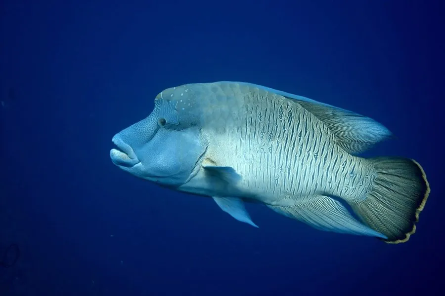

鱼类 · 动物界
苏眉鱼 Cheilinus undulatus

珊瑚礁中体型最大的隆头鱼，前额隆起如驼峰、唇厚眼小，体长可逾两米，因鱼唇被视为珍馐而遭过度捕捞，被列为濒危。
- 分类
- 门脊索动物门纲硬骨鱼纲目鲈形目科隆头鱼科属唇鱼属
- 栖息环境
- 珊瑚礁礁坡、潟湖、外礁边缘与礁洞，水深约 1–60 米
- 地理分布
- 印度洋与太平洋热带海域，从红海、东非至中国南海、澳大利亚与大洋洲岛屿
- 保护级别
- IUCN 濒危（EN）；CITES 附录Ⅱ
物种志
苏眉鱼是体型最大的隆头鱼之一，成年体长可达 1.5–2.3 米，体重 100–190 千克。头部轮廓独特：前额随年龄逐渐隆起形成明显的驼峰，吻部钝圆，唇厚而突出，眼小位于头部前上方。体色随年龄变化，幼鱼呈浅绿褐色并带黑色纵纹，成体转为蓝绿、橄榄绿至灰褐色，体侧有波状横纹，尾鳍大而圆。
它们分布于印度洋与太平洋的珊瑚礁区，栖息于礁坡、潟湖与外礁边缘，多在 1–60 米水深活动。食性包括软体动物、甲壳类、海星、海胆与部分有毒鱼类，能咬碎海胆的硬壳。苏眉鱼性成熟晚，约 5–7 岁才成熟，部分个体先雌后雄，繁殖期会聚集产卵，成体有固定的活动范围与洞穴。由于鱼唇被视为名贵食材，活鱼贸易价格高昂，加之生长缓慢、繁殖率低，其全球种群在近数十年大幅下降。
形态与习性
- 体长约 1.5–2.3 m，体重 100–190 kg
- 食性软体动物、甲壳类、海星、海胆与部分有毒鱼类
- 性成熟约 5–7 岁，部分个体先雌后雄
- 繁殖繁殖期聚集产卵，成体有固定活动范围与洞穴
- 头部特征前额随年龄隆起形成驼峰，唇厚眼小
- 体色幼鱼浅绿褐带黑纵纹，成体蓝绿至灰褐带波状纹
- 寿命可达 30 年以上
趣味知识
- 苏眉鱼的前额会随年龄越长越凸，老个体像戴着一顶骨质帽子。
- 它能咬碎海胆的硬壳，把带刺的猎物整个嚼碎吞下。
- 因为鱼唇被视为珍馐，一条大苏眉在活鱼市场上价格惊人。